03-level.png and 04-pause.png do not show a level or a pause overlay — both are the menu captured at different board-rotation phases. The real v2 gameplay still is p3-after-coord-press.png, used here for the level pair. There is no genuine v2 pause-overlay capture, so the "invented pause overlay" and "Settings-button-inside-settings" claims cannot be confirmed from this evidence set and are flagged for recapture (F24, N1).
A1 Menu / Saga
Pair: menu.png ↔ 01-menu.png. The single most-diverged screen after the overlays.
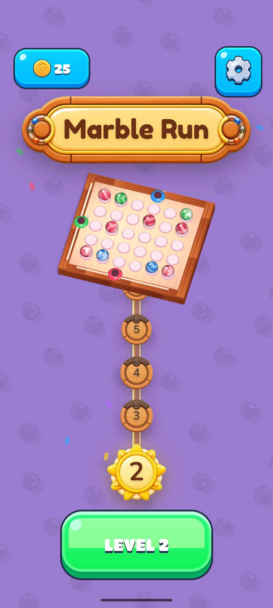
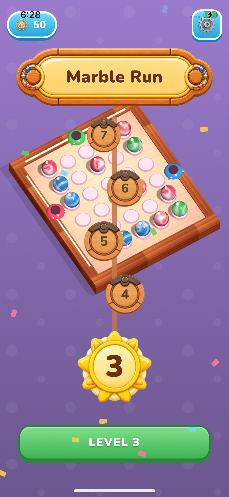
A2 In-Level (gameplay)
Pair: level-ref-full.png ↔ p3-after-coord-press.png (the true v2 gameplay still — not 03-level.png, which is the menu). The board itself is the closest-matching element in the whole build; the chrome around it is where fidelity breaks.
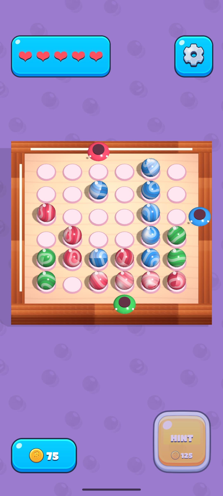
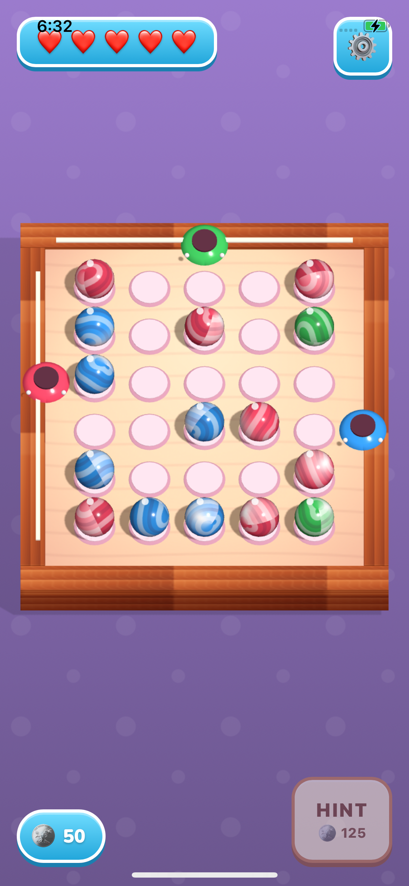
A3 Settings
Pair: settings-from-menu.png / settings.png ↔ 02-settings.png. Two reference variants exist (Restart+Home from menu; Close+Reset-link in level) — both are the same modal language. v2 collapses it into a full page.
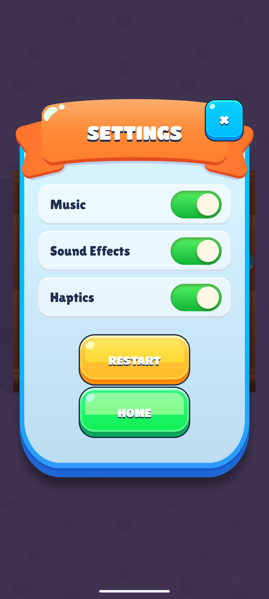

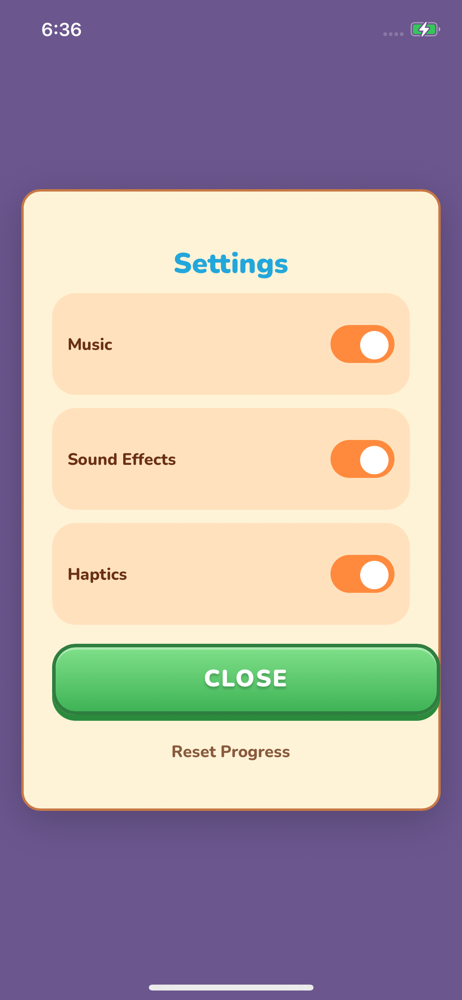
A4 Win / Level Complete
Pair: win-ref.png ↔ 05-win.png. The highest-impact overlay — the core reward moment — and it breaks the reference language on every element.
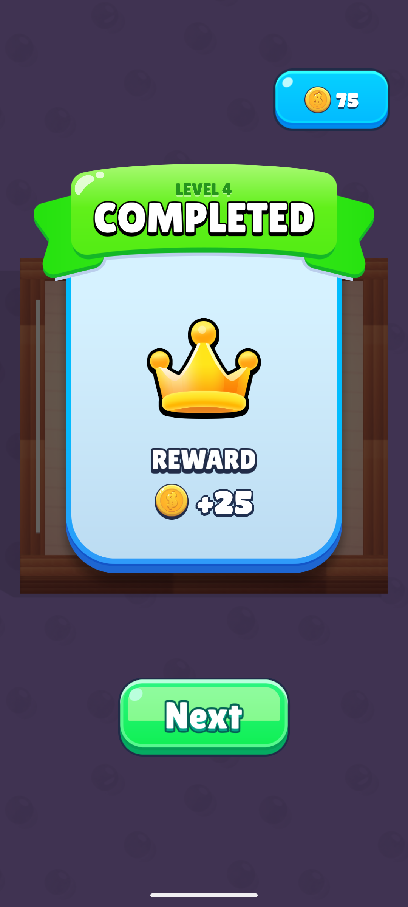
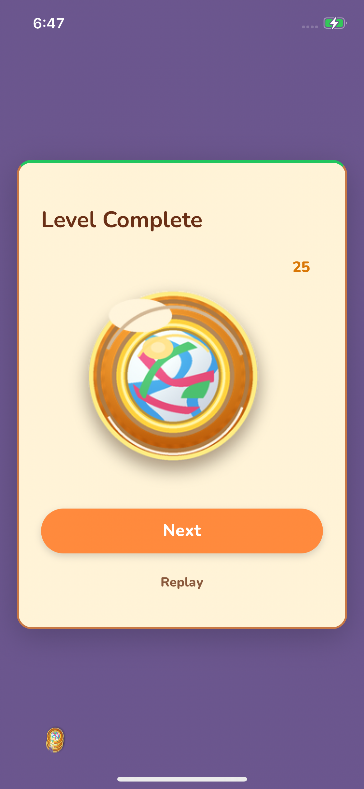
A5 Fail / No Hearts Left
Pair: fail-ref.png ↔ 06-fail.png.
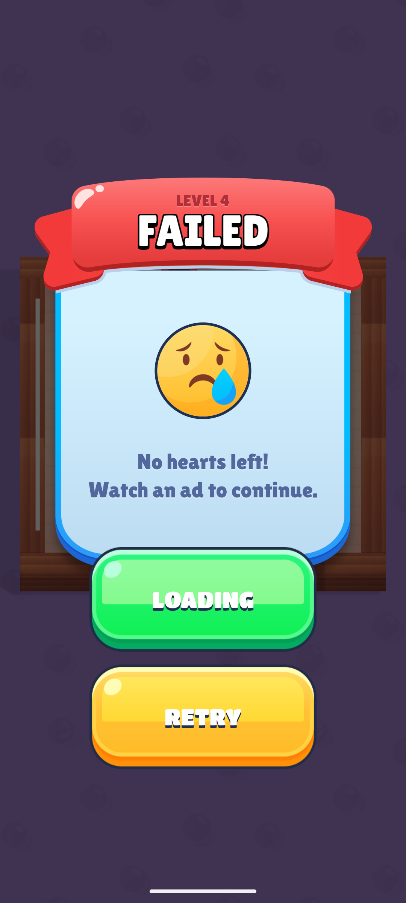
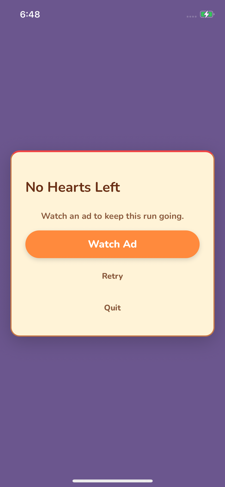
A6 Pause — no valid pair (finding in itself)
The reference has no separate pause screen — it reuses the settings modal. The task expected v2 to show an invented pause overlay in 04-pause.png.
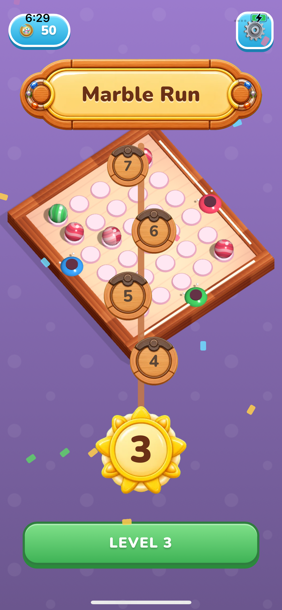
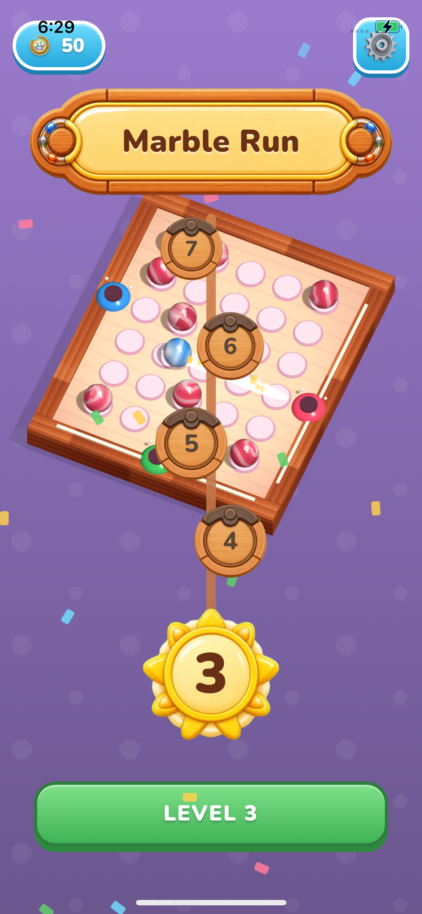
03-level.png and 04-pause.png are mislabeled: both are the menu at different board-rotation phases. The claimed "invented pause overlay" and "Settings button inside pause" therefore cannot be confirmed from this set. Recapture true level and pause states before acting on those two owner claims.B Asset & Font Inventory
The core deliverable. One row per asset: is the v2 element the actual reference asset? For a clone, a "close-enough" colour is still a NO.
| Asset | Reference | v2 Apple | Is v2 the actual reference asset? | Fix |
|---|---|---|---|---|
| Coin icon | Gold coin, white "$", highlight | Muddy multicolor disc | NO | Swap coin sprite (F08/F14/F30) |
| Settings gear | Clean light-grey gear on blue tile | Different gear asset, status-bar shadowed | NO | Swap gear asset (F09) |
| Hearts (lives) | Drawn glossy heart sprites | System emoji ❤️ | NO | Swap for heart sprite (F13) |
| Primary button | Green candy, glossy bevel, outlined label | Orange flat pill, plain label | NO | Retheme token green + candy sprite + font (F11/F21/F29) |
| Secondary button | Yellow candy (Retry) / green candy | Plain brown text link | NO | Adopt candy secondary button (F31) |
| Toggle switch | Green track, cream knob | Orange track, white knob | NO | Flip accent token to green (F21) |
| Saga node | Wood disc + metal clasp, engraved number | Similar wood disc + clasp | PARTIAL | Node OK; fix placement/offset (F02) |
| Saga connector | Intricate twin-rail wooden track | Plain single brown rope | NO | Swap connector asset (F03) |
| Board frame | Wood frame, top-down playfield | Wood frame, top-down — faithful | YES | Keep (F17); stop rotating it on menu (F05) |
| Marble sprites | Glossy swirled marbles | Glossy swirled marbles — faithful | YES | Keep |
| Background pattern | Translucent glass-marble spheres | Flat dots + confetti (not marbles) | NO | Swap bg tile to marble motif (F06) |
| Logo text | Wood plaque, brown rounded title | Similar plaque, wider/larger | PARTIAL | Match plaque width/scale (F10) |
| HINT tile | Warm tan panel, gold coin | Grey-lavender panel, silver coin | NO | Retheme tan + gold coin (F15) |
| Win art | Gold CROWN | Gold disc + scribble globe | NO | Swap for crown asset (F27) |
| Ribbon banner | Coloured ribbon header (orange/green/red) | Absent — 2px coloured top strip stand-in | NO | Add ribbon-banner component (F19/F25/F31/N3) |
| Overlay scrim | Dimmed board behind every overlay | Opaque flat purple, no scrim | NO | Add backdrop scrim (F18/F26/N2) |
| Font — headings/CTAs | Chunky display, heavy white outline | Soft rounded sans, no outline | NO | Add outlined display face (F20/N6) |
| Font — body/labels | Rounded bold navy | Rounded sans, brown/blue | PARTIAL | Match weight + colour token (N6) |
| App icon | Not captured | Not captured (owner: missing on Apple) | UNKNOWN | Capture both home screens & diff (N7) |
C Motion & Feedback
Stills cannot prove motion. Some of these are evidenced by multi-frame stills; others explicitly need video capture.